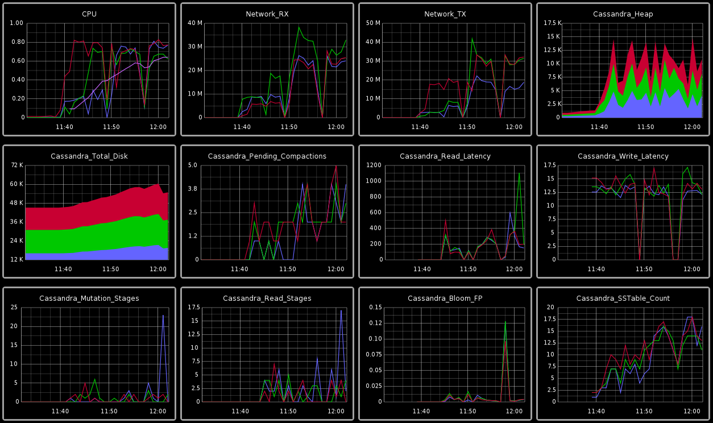

Fejlesztői eszközök
Avagy hogy csináljuk okosan.
Csergő Bálint / @abagoly
Infrastructure Engineer @ Ustream
Ezekkel dolgozom
És Ezeken dolgozom
Miről lesz ma szó?
Mi a leggyakrabban elhangzó kifogás egy fejlesztő szájából?
Hát de ez lokálban működött!
Mi az első parancs amit egy webfejlesztő lefuttat az új gépén?
SUDO APT-GET INSTALL APACHE2
És kis méretű csapatnál, illetve ha freelancerkedsz ez még akár rendben is lehet.
De most gondoljatok ebbe bele egy 100 főt számláló csapatnál
Az eredmény hasonló lesz

Lehet ám ezt máshogy.
Captain Vagrant to the rescue
De mi az a Vagrant?
A Vagrant segítségével nagyon egyszerűen lehet virtuális futtató környezetet létrehozni és azokat kezelni.
Demo!
És akkor minden alkalommal egy új baseboxal induljunk el, ha valami változik?
Nem, használjunk config management eszközöket!
Chef!
- Ruby DSL
- "Chef-Solo"
- Cookbooks
- Recipes
- Na jó, inkább megmutatom a gyakorlatban
Demo
Error Handling
try {
}
catch (Exception ex) {
// Gotcha!
}
Inkább így
Az Errbit egy nyílt forrású nyelv független alkalmazás a hibák szofisztikált naplózására és kezelésére.
Beüzemelni nem fájdalmas, és a legtöbb nyelvhez létezik hozzá library.
Ha nincs még Lib a nyelvhez amit használsz, akkor van 1 HTTP-s API amin keresztül el tudod küldeni a hibákat Errbitbe.
DEMO
Működik az alkalmazásunk,
Biztos ez?
Amit nem Mérünk arról nem garantálható, hogy működik
Graphite
statSD
Simple daemon for easy stats aggregation
Most már vannak Adataink, de ki fog nekünk szólni, ha valami eltört?
Mit jelent a monitorozás?
Miért jó?
NAGIOS